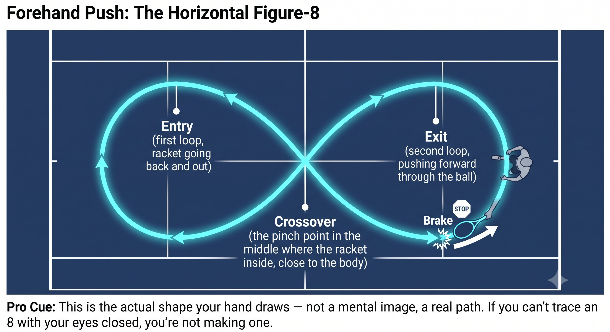
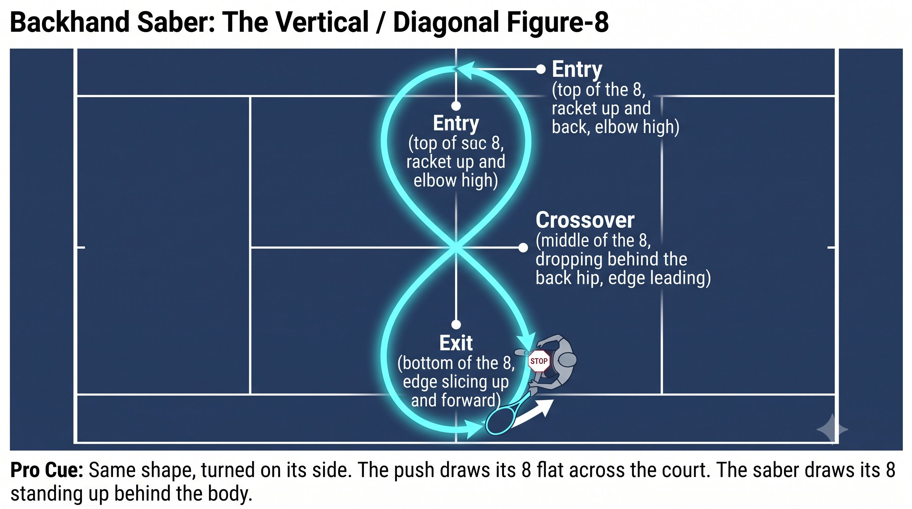
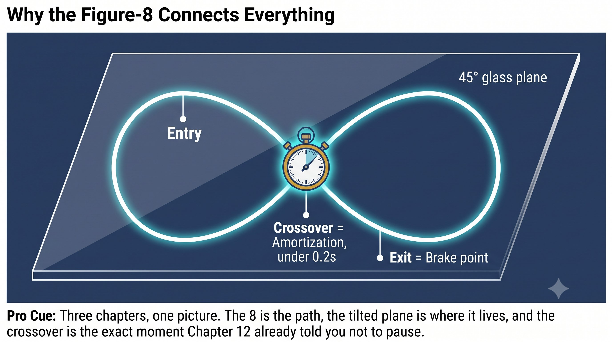
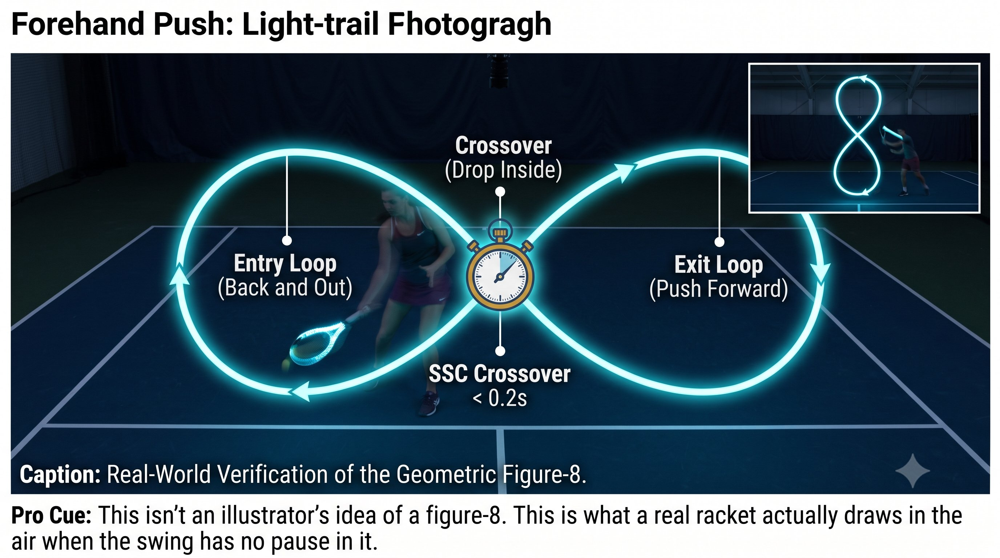

Chương 13: Điều Tiết Figure-8¶
Bộ Điều Tiết Công Suất (8)¶
Cách bạn đánh nhẹ, vừa, và mạnh mà không bao giờ đổi cơ học. Cùng vòng lặp, cùng SSC, cùng cú phanh — thứ duy nhất thay đổi là kích cỡ của số 8.
Đó không phải một hình bạn vẽ ra. Đó là đường đi mà bàn tay và trọng tâm cây vợt tạo ra khi bạn nối Kéo vợt ra sau vào vung tiến một cách liên tục.
— Henry Phạm

Hình 13.1
Figure-8 Thực Sự Là Gì¶
Dừng lại ở cuối Kéo vợt ra sau và bạn có hai động tác riêng biệt thay vì một — và điều đó giết chết SSC. Số 8 chính là thứ đảm bảo ngay từ đầu không có sự dừng lại nào.
Nguyên Lý Cốt Lõi¶
Số 8 đảm bảo không có sự dừng lại. Một đường đi thẳng lùi-tiến có độ chùng tại điểm đảo chiều, và độ chùng đó làm mất năng lượng. Số 8 không có độ chùng nào cả — nó giữ độ căng liên tục suốt cả đường đi.
Forehand Push: Figure-8 Nằm Ngang¶
Hãy hình dung nhìn thẳng từ trên xuống:

Hình 13.2
-
Vào: cây vợt lùi ra sau và hơi ra ngoài, ngực mở, và đường xoắn ốc căng ra. Đây là nửa đầu của số 8.
-
Crossover: cây vợt rơi vào bên trong, sát người, với đáy cán vợt chỉ về phía bóng. Cú rơi vào bên trong này chính là điểm giữa của số 8, nơi hướng đi đổi chiều — và đây chính là pha amortization. Nó phải nhanh và mượt.
-
Ra: từ bên trong, bạn đẩy tiến xuyên qua bóng — nửa sau của số 8. Rồi chân trước phanh lại và tạo ra cú xung 1-inch.
Nguyên Lý Cốt Lõi¶
Giữ số 8 nằm ngang. Nếu làm nó thẳng đứng thay vào đó — một vòng lặp lớn từ thấp lên cao — bạn sẽ mất lực đẩy tiến, chỉ còn lại topspin lượn lờ mà thôi. Một số 8 nằm ngang cho bạn cả drive lẫn topspin cùng lúc. Cảm giác push sống trong mặt phẳng nằm ngang này.
Điều Tiết Công Suất: Cùng Số 8, Khác Kích Cỡ và Tốc Độ¶
Bạn không bao giờ đổi cú vung của mình để tạo công suất. Bạn đổi kích cỡ và tốc độ của số 8.
Nguyên Lý Cốt Lõi¶
Bạn không đổi cú vung để tạo công suất. Bạn đổi kích cỡ và tốc độ của số 8. Cùng vòng lặp, cùng SSC, cùng cú phanh — chỉ có kích cỡ và tốc độ khác nhau. Tensegrity vẫn giữ nạp lực, SSC vẫn nguyên vẹn.
Backhand Saber: Figure-8 Thẳng Đứng / Chéo¶
Giờ hãy hình dung nhìn từ bên hông:
- Vào: cây vợt đi lên trên và ra sau, khuỷu tay cao, và đường lưng căng ra. Đây là đỉnh của số 8.

Hình 13.3
-
Crossover: cây vợt rơi xuống phía sau bạn, cạnh vợt dẫn đầu — điểm giữa của số 8, gần hông sau. Cú rơi này phải đến từ trọng lực, không bao giờ từ cơ bắp, và đây chính là pha amortization. Nó phải nhanh và mượt.
-
Ra: cạnh vợt cắt lên trên và tiến xuyên qua bóng — đáy của số 8 trên đường ra. Ngực phanh lại và giữ nguyên vị trí nghiêng bên.
Nguyên Lý Cốt Lõi¶
Số 8 của saber chạy theo chiều thẳng đứng hoặc chéo. Một số 8 nhỏ cho bạn slice hoặc chip. Một số 8 vừa cho bạn một cú rally topspin. Một số 8 gọn và bạo liệt tấn công một quả bóng cao.
Điều Tiết Công Suất: Cùng Saber 8, Khác Kích Cỡ và Tốc Độ¶
Vì Sao Số 8 Kết Nối Mọi Thứ Đã Xây Dựng¶
Các Bài Tập Để Tìm Số 8 Của Bạn¶
-
Shadow số 8, không bóng: thực hiện 20 cú figure-8 liên tục chỉ bằng tay, đáy cán vợt dẫn đầu. Không dừng lại ở bất kỳ điểm nào trên đường đi. Cảm nhận sự kết nối từ vòm chân trong qua cơ chéo bụng đến lòng bàn tay luôn sống động suốt cả quá trình.
-
Thêm cú phanh chân trước: 8-8-phanh-xung, rồi 8-8-8-phanh-xung. Cảm nhận chân trước dừng cứng tại điểm ra của mỗi số 8.
-
Điều tiết công suất: đối tác hô "20%, 50%, 100%". Bạn giữ nguyên đường đi của số 8, chỉ đổi kích cỡ và tốc độ. 20% là một số 8 rất nhỏ và chậm. 100% là một số 8 rất nhỏ và nhanh với một cú phanh cứng. Đưa vợt ra xa phía sau cho cú 100% và bạn đã mất nó rồi — một Kéo vợt ra sau lớn không phải là công suất, đó chỉ là một số 8 chậm.
-
Bài tập điều tiết có nạp bóng: đối tác hô "20%, 50%, 100%" trong khi nạp bóng. Bạn giữ nguyên đường đi của số 8, chỉ đổi kích cỡ và tốc độ. Nếu bạn thấy mình đang đưa vợt ra xa phía sau cho quả bóng 100%, bạn đã mất nó rồi — một Kéo vợt ra sau lớn không phải là công suất, đó là một số 8 chậm.
Quy Tắc¶
Một số 8 nhỏ với một cú phanh cứng tạo ra tác động lớn hơn một số 8 to với một cú phanh mềm. Cú đấm 1-inch của Bruce Lee chính xác là điều này: một số 8 nhỏ, một cú phanh bạo liệt, và một xung lực khổng lồ.
Danh Sách Kiểm Tra Figure-8¶
ĐẦU BẤT ĐỘNG. MẮT ĐÃ ĐỖ. SỐ 8 NHỎ. PHANH CỨNG. XUNG 1-INCH.
– Tìm số 8 nằm ngang của bạn (push) và số 8 thẳng đứng của bạn (saber) — 20 lần shadow mỗi loại.
– Điểm crossover của số 8 phải nhanh và mượt — không dừng nghĩa là amortization dưới 0.2 giây.
– Công suất đến từ việc đổi kích cỡ và tốc độ của số 8, không bao giờ từ việc đổi cơ học của cú vung.

Hình 13.4
– 20% là một số 8 rất nhỏ và chậm. 50% là một số 8 vừa. 100% là một số 8 rất nhỏ và nhanh với một cú phanh cứng.
– Đưa vợt ra xa phía sau để tạo công suất và bạn đã làm một số 8 to và chậm — mất toàn bộ ý nghĩa.
– Một số 8 nằm ngang trên mặt phẳng kính 45° là push. Một số 8 thẳng đứng trên cùng mặt phẳng đó là saber.
– Crossover của số 8 chính là pha amortization — giữ nó mượt và dưới 0.2 giây để giữ năng lượng đàn hồi.
Chương Này Dẫn Đến Đâu¶
Chương này thiết lập 8 — điều tiết figure-8 — như biến số trong hệ thống Q-V-ROOT-8-45-Impulse-Kình CORE. Chương 14 bao quát mặt phẳng vung 45 độ như điểm ngọt. Chương 15 bao quát cú phanh và cú xung như cú xung 1-inch, hay phát kình (fa jin). Chương 16 bao quát kình như ba biểu hiện là kết quả.

Hình 13.5
←Chương TrướcChương 12: Chu Kỳ Co GiãnChương TiếpChương 14: Mặt Phẳng 45°→